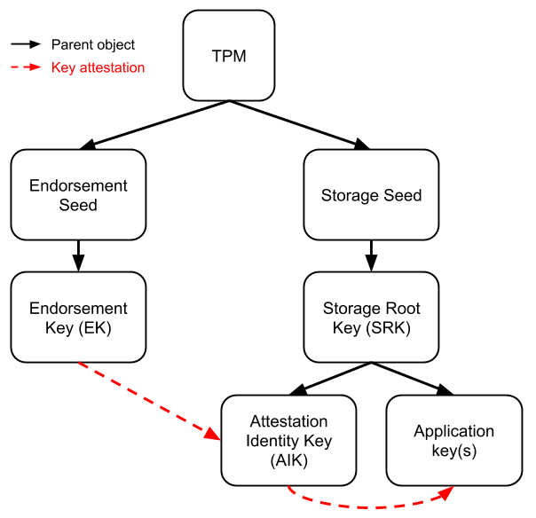

The Trusted Platform Module is a security device that sits on a physical motherboard, runs in a CPU trust zone, or is provided by a hypervisor. By functioning below the OS and boot sequence, it provides a trust anchor to verify those systems even if they’ve been compromised. TPMs are required for any device qualified for Windows, underpinning technologies like Windows’ BitLocker, various features in ChromeOS, and Linux’s Integrity Measurement Architecture.
But looking at the thousands of pages of specifications and auxiliary documents will also lead you to another conclusion. TPMs are ridiculously complex.
TPMs can attest boot state, identify devices, seal secrets, store arbitrarily complex key hierarchies, build authorization Rube Goldberg machines, optionally encrypt/audit/authenticate sessions. Its design is so flexible that in most contexts the term “TPM” is largely replaceable with “magic security pixie dust.”
I work with these regularly and yes, I’m confused too.
This guide was developed to try to resolve some of my own confusion around TPM key management. It uses GCP’s free Cloud Shell which have virtual TPMs to program against. All examples should be runnable there and it’s a nice alternative to acquiring hardware. To keep things relatively sane we’ll focus on TPM 2.0 on Linux, ignoring other OSes and earlier spec versions.
Special thanks to Tom D’Netto (@Twitchyliquid64), Brandon Weeks (@__weeks__), Hunter King, and Matthew Garrett (@mjg59) for sharing the pain. Check out go-attestation for some of our Open Source work in this area.
TPMs on Linux
The Kernel exposes the TPM under /dev/tpm0 and /dev/tpmrm0. tpm0 provides direct access to the TPM relying on userland to synchronize and load/unload keys, while tpmrm0 uses the Kernel’s builtin resource manager. We’ll be using tpmrm0 for this post.
Once we’ve opened a file handle we can use github.com/google/go-tpm to execute TPM commands. Here’s a program that uses the TPM as a source of randomness.
f, err := os.OpenFile("/dev/tpmrm0", os.O_RDWR, 0)
if err != nil {
log.Fatalf("opening tpm: %v", err)
}
defer f.Close()
out, err := tpm2.GetRandom(f, 16)
if err != nil {
log.Fatalf("getting random bytes: %v", err)
}
fmt.Printf("%x\n", out)
On a Cloud Shell this program prints:
$ go build -o bin/rand rand.go
$ sudo ./bin/rand
178815ea4843ea83e7b022fed301bdb4
$ sudo ./bin/rand
8cb55dc1aed3f010f40e0688b7438b53
Key hierarchies
One of the main features of a TPM is generating keys and using those keys to attest facts about the TPM.
Instead of storing keys directly, TPMs have secret values called “seeds” that never leave the TPM and persist through reboots. Seeds are used to deterministically generate keys, which can in turn identify the TPM even if the external storage is wiped (e.g. during OS installs).
There are three seeds and associated hierarchies:
- Endorsement: keys used to identify the TPM.
- Storage: keys used by local applications.
- Platform: (we’ll be ignoring this one) keys used by the TPM for its own operation.
While it’s possible to create any hierarchy, there are enough opaque restrictions that the standard configuration is the only common one. To configure this, we’ll be generating three well-known keys (the Endorsement Key, Storage Root Key, and Attestation Identity Key) and using them to attest a key used by an application.

There are two main classifications of keys: restricted and non-restricted.
Restricted keys are used to sign or decrypt TPM state or challenges: asserting boot measurements, or proving that a key is resident on the same TPM. In our hierarchy the EK, SRK, and AIK are all restricted keys.
Non-restricted keys are intended for general use. These can be used as TLS client keys, to sign documents, etc. The application keys will be non-restricted.
Endorsement Key
Endorsement Keys are special because key generation uses a well-known template. This means the TPM manufacturer, device manufacturer, and end user will always end up with the same key for the same seed.
In some cases, TPM manufacturers will sign a certificate for the EK and store it in NVRAM. In rarer scenarios, the device manufacturer will also issue a Platform Certificate, which references the EK Certificate and holds information such as the device serial number. These certificates can be used in combination with the EK to bootstrap trust.
On GCP, the getShieldedInstanceIdentity API can be used to fetch the EK Certificate (we’ll leave that for another time).
Let’s generate an Endorsement Key and store its context to use later:
f, err := os.OpenFile("/dev/tpmrm0", os.O_RDWR, 0)
if err != nil {
log.Fatalf("opening tpm: %v", err)
}
defer f.Close()
tmpl := tpm2.Public{
Type: tpm2.AlgRSA,
NameAlg: tpm2.AlgSHA256,
Attributes: tpm2.FlagFixedTPM | // Key can't leave the TPM.
tpm2.FlagFixedParent | // Key can't change parent.
tpm2.FlagSensitiveDataOrigin | // Key created by the TPM (not imported).
tpm2.FlagAdminWithPolicy | // Key has an authPolicy.
tpm2.FlagRestricted | // Key used for TPM challenges, not general decryption.
tpm2.FlagDecrypt, // Key can be used to decrypt data.
AuthPolicy: []byte{
// TPM2_PolicySecret(TPM_RH_ENDORSEMENT)
// Endorsement hierarchy must be unlocked to use this key.
0x83, 0x71, 0x97, 0x67, 0x44, 0x84,
0xB3, 0xF8, 0x1A, 0x90, 0xCC, 0x8D,
0x46, 0xA5, 0xD7, 0x24, 0xFD, 0x52,
0xD7, 0x6E, 0x06, 0x52, 0x0B, 0x64,
0xF2, 0xA1, 0xDA, 0x1B, 0x33, 0x14,
0x69, 0xAA,
},
RSAParameters: &tpm2.RSAParams{
Symmetric: &tpm2.SymScheme{Alg: tpm2.AlgAES, KeyBits: 128, Mode: tpm2.AlgCFB},
KeyBits: 2048,
ModulusRaw: make([]byte, 256),
},
}
ek, pub, err := tpm2.CreatePrimary(f, tpm2.HandleEndorsement, tpm2.PCRSelection{}, "", "", tmpl)
if err != nil {
log.Fatalf("creating ek: %v", err)
}
out, err := tpm2.ContextSave(f, ek)
if err != nil {
log.Fatalf("saving context: %v", err)
}
if err := ioutil.WriteFile("ek.ctx", out, 0644); err != nil {
log.Fatalf("writing context: %v", err)
}
pubDER, err := x509.MarshalPKIXPublicKey(pub)
if err != nil {
log.Fatalf("encoding public key: %v", err)
}
b := &pem.Block{Type: "PUBLIC KEY", Bytes: pubDER}
pem.Encode(os.Stdout, b)
There are some reasonable template fields, then there’s authPolicy. authPolicy is a hash that represents a sequence of authorizations. To access a key with a policy a session repeats the authorization sequence, causing the session hash to match the authPolicy and granting access to the key. We’ll largely be ignoring sessions and policies (and sticking to empty passwords!), but later on there will be an example of setting up a session to access the EK.
Because key generation is deterministic, this program will always print the same result on the same device:
$ go build -o bin/ek ek.go
$ sudo ./bin/ek
-----BEGIN PUBLIC KEY-----
MIIBIjANBgkqhkiG9w0BAQEFAAOCAQ8AMIIBCgKCAQEA+N1FqzITQPBH4v/cLQdd
rlfKYEtgTvDcLVAxfckosZWa9PuqRdrxOcif1dFYsSeL7gbwmzVswMNA1cYdiBNV
cpkU3DkQGvSTFJXc46lUFNtsH3X69ONB3i+eiH3SDEj3xfZ8BoTVvzwly7idwfpL
QAfj4531ehrO0yt7AhF7bfjdlTrTHt5IiRIJ9oV5IWfs18TwrUhVAdPYjzUU3gG4
F5TLB9asBlyMCq9pbvXf1aC/eGSQ1uD06Qn5o5j2Sc2Ut9eHrfONIpUEb4Awz3LO
TJdtUGmQVJPTGWIw/WJ53dtXsE+FpVuYVqXXLMYiASzq8x4MiEgw884j3NRXByOt
gQIDAQAB
-----END PUBLIC KEY-----
$ sudo ./bin/ek
-----BEGIN PUBLIC KEY-----
MIIBIjANBgkqhkiG9w0BAQEFAAOCAQ8AMIIBCgKCAQEA+N1FqzITQPBH4v/cLQdd
rlfKYEtgTvDcLVAxfckosZWa9PuqRdrxOcif1dFYsSeL7gbwmzVswMNA1cYdiBNV
cpkU3DkQGvSTFJXc46lUFNtsH3X69ONB3i+eiH3SDEj3xfZ8BoTVvzwly7idwfpL
QAfj4531ehrO0yt7AhF7bfjdlTrTHt5IiRIJ9oV5IWfs18TwrUhVAdPYjzUU3gG4
F5TLB9asBlyMCq9pbvXf1aC/eGSQ1uD06Qn5o5j2Sc2Ut9eHrfONIpUEb4Awz3LO
TJdtUGmQVJPTGWIw/WJ53dtXsE+FpVuYVqXXLMYiASzq8x4MiEgw884j3NRXByOt
gQIDAQAB
-----END PUBLIC KEY-----
Storage Root Key
For reasons, creating keys under the Endorsement hierarchy can be fidgety, so setups tend to create keys under the Storage hierarchy instead. Endorsement Keys can still attest keys under other hierarchies, so while we’ll generate a Storage Root Key we won’t actually be using it for attestations. The SRK only acts as a parent to other keys.
This looks familiar to the EK, and has a similar spec defining the template. But instead of creating the key under “HandleEndorsement” we create it under “HandleOwner” signifying the Storage hierarchy.
f, err := os.OpenFile("/dev/tpmrm0", os.O_RDWR, 0)
if err != nil {
log.Fatalf("opening tpm: %v", err)
}
defer f.Close()
tmpl := tpm2.Public{
Type: tpm2.AlgRSA,
NameAlg: tpm2.AlgSHA256,
Attributes: tpm2.FlagFixedTPM | // Key can't leave the TPM.
tpm2.FlagFixedParent | // Key can't change parent.
tpm2.FlagSensitiveDataOrigin | // Key created by the TPM (not imported).
tpm2.FlagUserWithAuth | // Uses (empty) password.
tpm2.FlagNoDA | // This flag doesn't do anything, but it's in the spec.
tpm2.FlagRestricted | // Key used for TPM challenges, not general decryption.
tpm2.FlagDecrypt, // Key can be used to decrypt data.
RSAParameters: &tpm2.RSAParams{
Symmetric: &tpm2.SymScheme{Alg: tpm2.AlgAES, KeyBits: 128, Mode: tpm2.AlgCFB},
KeyBits: 2048,
ModulusRaw: make([]byte, 256),
},
}
srk, _, err := tpm2.CreatePrimary(f, tpm2.HandleOwner, tpm2.PCRSelection{}, "", "", tmpl)
if err != nil {
log.Fatalf("creating srk: %v", err)
}
out, err := tpm2.ContextSave(f, srk)
if err != nil {
log.Fatalf("saving context: %v", err)
}
if err := ioutil.WriteFile("srk.ctx", out, 0644); err != nil {
log.Fatalf("writing context: %v", err)
}
Attesting keys
While generating keys locally is fine, hardware keys are much more interesting if you can prove that they’re stored in hardware.
TPMs provide the ability to attest that two keys are resident in the same TPM. While this won’t help you for the first key in the trust hierarchy, every subsequent key can be attested by an earlier one. This lets us chain sets of keys back to the Endorsement Key, and if we trust that the EK is stored in a TPM, then we transitively trust that all other keys are as well.
Credential activation
For privacy, keys generated from seeds such as the EK and SRK can only decrypt, they can’t sign. This provides a layer of abstraction between keys that are consistent through a device’s lifecycle, and keys used by general applications.
Proving a key is on the same TPM as the EK is complicated because EK can’t simply sign an attestation. Instead, we use a challenge and response protocol called Credential Activation where a certificate authority encrypts a secret then asks the EK to decrypt it.
First, we have to create our Attestation Identity Key (AIK). This will be a child of the SRK, but we’ll also need the EK for the challenge.
f, err := os.OpenFile("/dev/tpmrm0", os.O_RDWR, 0)
if err != nil {
log.Fatalf("opening tpm: %v", err)
}
defer f.Close()
srkCtx, err := ioutil.ReadFile("srk.ctx")
if err != nil {
log.Fatalf("read srk: %v", err)
}
srk, err := tpm2.ContextLoad(f, srkCtx)
if err != nil {
log.Fatalf("load srk: %v", err)
}
ekCtx, err := ioutil.ReadFile("ek.ctx")
if err != nil {
log.Fatalf("read ek: %v", err)
}
ek, err := tpm2.ContextLoad(f, ekCtx)
if err != nil {
log.Fatalf("load ek: %v", err)
}
tmpl := tpm2.Public{
Type: tpm2.AlgECC,
NameAlg: tpm2.AlgSHA256,
Attributes: tpm2.FlagFixedTPM | // Key can't leave the TPM.
tpm2.FlagFixedParent | // Key can't change parent.
tpm2.FlagSensitiveDataOrigin | // Key created by the TPM (not imported).
tpm2.FlagRestricted | // Key used to sign TPM messages, not external ones.
tpm2.FlagUserWithAuth | // Uses (empty) password.
tpm2.FlagSign, // Key can be used to sign data.
ECCParameters: &tpm2.ECCParams{
Sign: &tpm2.SigScheme{Alg: tpm2.AlgECDSA, Hash: tpm2.AlgSHA256},
CurveID: tpm2.CurveNISTP256,
Point: tpm2.ECPoint{
XRaw: make([]byte, 32),
YRaw: make([]byte, 32),
},
},
}
After creating the AK, we’ll need to pass a few values back to the certificate authority:
- The EK public key to encrypt the challenge to.
- The AIK public key blob, which includes content such as the key attributes.
- The AIK name, which is a hash of the public key blob.
privBlob, pubBlob, _, _, _, err := tpm2.CreateKey(f, srk, tpm2.PCRSelection{}, "", "", tmpl)
if err != nil {
log.Fatalf("create aik: %v", err)
}
aik, nameData, err := tpm2.Load(f, srk, "", pubBlob, privBlob)
if err != nil {
log.Fatalf("load aik: %v", err)
}
aikCtx, err := tpm2.ContextSave(f, aik)
if err != nil {
log.Fatalf("saving context: %v", err)
}
if err := ioutil.WriteFile("aik.ctx", aikCtx, 0644); err != nil {
log.Fatalf("writing context: %v", err)
}
ekTPMPub, _, _, err := tpm2.ReadPublic(f, ek)
if err != nil {
log.Fatalf("read ek public: %v", err)
}
ekPub, err := ekTPMPub.Key()
if err != nil {
log.Fatalf("decode ek public key: %v", err)
}
The challenge asks the EK to verify another key name is also loaded into the TPM. Because key names are digests of the public key blob, the certificate authority can verify public key attributes and reject any that don’t match expectations. For example, we likely want to throw out keys that don’t use FlagFixedTPM or FlagSensitiveDataOrigin since they can be imported or exported.
Included in the encrypted blob is a secret that the certificate authority tracks with the challenge.
// Verify digest matches the public blob that was provided.
name, err := tpm2.DecodeName(bytes.NewBuffer(nameData))
if err != nil {
log.Fatalf("unpacking name: %v", err)
}
if name.Digest == nil {
log.Fatalf("name was not a digest")
}
h, err := name.Digest.Alg.Hash()
if err != nil {
log.Fatalf("failed to get name hash: %v", err)
}
pubHash := h.New()
pubHash.Write(pubBlob)
pubDigest := pubHash.Sum(nil)
if !bytes.Equal(name.Digest.Value, pubDigest) {
log.Fatalf("name was not for public blob")
}
// Inspect key attributes.
pub, err := tpm2.DecodePublic(pubBlob)
if err != nil {
log.Fatalf("decode public blob: %v", err)
}
fmt.Printf("Key attributes: 0x08%x\n", pub.Attributes)
// Generate a challenge for the name.
//
// Note that some TPMs enforce a maximum secret size of 32 bytes.
secret := []byte("Brevity is the soul of wit")
symBlockSize := 16
credBlob, encSecret, err := credactivation.Generate(name.Digest, ekPub, symBlockSize, secret)
if err != nil {
log.Fatalf("generate credential: %v", err)
}
The EK passes the challenge by returning the decrypted secret to the certificate authority. During this process, it verifies the named credential is bound to the same TPM.
Because our EK uses an authPolicy, we have to configure a session and authenticate in order to use it. In this case the policy is generated by TPM2_PolicySecret(TPM_RH_ENDORSEMENT), so we execute the same command to match the digest.
session, _, err := tpm2.StartAuthSession(f,
tpm2.HandleNull,
tpm2.HandleNull,
make([]byte, 16),
nil,
tpm2.SessionPolicy,
tpm2.AlgNull,
tpm2.AlgSHA256)
if err != nil {
log.Fatalf("creating auth session: %v", err)
}
auth := tpm2.AuthCommand{Session: tpm2.HandlePasswordSession, Attributes: tpm2.AttrContinueSession}
if _, _, err := tpm2.PolicySecret(f, tpm2.HandleEndorsement, auth, session, nil, nil, nil, 0); err != nil {
log.Fatalf("policy secret failed: %v", err)
}
auths := []tpm2.AuthCommand{auth, {Session: session, Attributes: tpm2.AttrContinueSession}}
out, err := tpm2.ActivateCredentialUsingAuth(f, auths, aik, ek, credBlob[2:], encSecret[2:])
if err != nil {
log.Fatalf("activate credential: %v", err)
}
fmt.Printf("%s\n", out)
After a bit of song and dance, this program prints the secret we used in the challenge proving the AIK is resident on the same TPM as the EK:
$ go build -o bin/aik aik.go
$ sudo ./bin/aik
Key attributes: 0x0850072
Brevity is the soul of wit
Credential certification
Credential proofs are easier for keys that can sign, since they can create signatures for attestation events directly. To demonstrate, we’ll create an application key and use the AIK to certify it. For this we’ll need to load the SRK (to act as the parent) and the AIK.
f, err := os.OpenFile("/dev/tpmrm0", os.O_RDWR, 0)
if err != nil {
log.Fatalf("opening tpm: %v", err)
}
defer f.Close()
srkCtx, err := ioutil.ReadFile("srk.ctx")
if err != nil {
log.Fatalf("read srk: %v", err)
}
srk, err := tpm2.ContextLoad(f, srkCtx)
if err != nil {
log.Fatalf("load srk: %v", err)
}
aikCtx, err := ioutil.ReadFile("aik.ctx")
if err != nil {
log.Fatalf("read aik: %v", err)
}
aik, err := tpm2.ContextLoad(f, aikCtx)
if err != nil {
log.Fatalf("load aik: %v", err)
}
This time we’ll generate a key without the “restricted” flag letting it sign arbitrary data.
// Same as the AIK, but without the "restricted" flag.
tmpl := tpm2.Public{
Type: tpm2.AlgECC,
NameAlg: tpm2.AlgSHA256,
Attributes: tpm2.FlagFixedTPM | // Key can't leave the TPM.
tpm2.FlagFixedParent | // Key can't change parent.
tpm2.FlagSensitiveDataOrigin | // Key created by the TPM (not imported).
tpm2.FlagUserWithAuth | // Uses (empty) password.
tpm2.FlagSign, // Key can be used to sign data.
ECCParameters: &tpm2.ECCParams{
Sign: &tpm2.SigScheme{Alg: tpm2.AlgECDSA, Hash: tpm2.AlgSHA256},
CurveID: tpm2.CurveNISTP256,
Point: tpm2.ECPoint{
XRaw: make([]byte, 32),
YRaw: make([]byte, 32),
},
},
}
privBlob, pubBlob, _, hash, ticket, err := tpm2.CreateKey(f, srk, tpm2.PCRSelection{}, "", "", tmpl)
if err != nil {
log.Fatalf("create aik: %v", err)
}
appKey, _, err := tpm2.Load(f, srk, "", pubBlob, privBlob)
if err != nil {
log.Fatalf("load app key: %v", err)
}
// Write key context to disk.
appKeyCtx, err := tpm2.ContextSave(f, appKey)
if err != nil {
log.Fatalf("saving context: %v", err)
}
if err := ioutil.WriteFile("app.ctx", appKeyCtx, 0644); err != nil {
log.Fatalf("writing context: %v", err)
}
To certify the new key we call CertifyCreation, passing the AIK as the signing object. This returns an attestation and a signature.
aikTPMPub, _, _, err := tpm2.ReadPublic(f, aik)
if err != nil {
log.Fatalf("read aik pub: %v", err)
}
sigParams := aikTPMPub.ECCParameters.Sign
aikPub, err := aikTPMPub.Key()
if err != nil {
log.Fatalf("getting aik public key")
}
attestData, sigData, err := tpm2.CertifyCreation(f, "", appKey, aik, nil, hash, *sigParams, ticket)
if err != nil {
log.Fatalf("certify creation: %v", err)
}
Instead of a challenge and response dance, the certificate authority simply verifies the signature using the AIK’s public key.
aikECDSAPub, ok := aikPub.(*ecdsa.PublicKey)
if !ok {
log.Fatalf("expected ecdsa public key, got: %T", aikPub)
}
if len(sigData) != 64 {
log.Fatalf("expected ecdsa signature")
}
var r, s big.Int
r.SetBytes(sigData[:len(sigData)/2])
s.SetBytes(sigData[len(sigData)/2:])
// Verify attested data is signed by the EK public key.
digest := sha256.Sum256(attestData)
if !ecdsa.Verify(aikECDSAPub, digest[:], &r, &s) {
log.Fatalf("signature didn't match")
}
At this point the attestation data’s signature is correct and can be used to further verify the application key’s public key blob. We then unpack the blob to inspect the attributes of the newly created key.
// Verify the signed attestation was for this public blob.
a, err := tpm2.DecodeAttestationData(attestData)
if err != nil {
log.Fatalf("decode attestation: %v", err)
}
pubDigest := sha256.Sum256(pubBlob)
if !bytes.Equal(a.AttestedCreationInfo.Name.Digest.Value, pubDigest[:]) {
log.Fatalf("attestation was not for public blob")
}
// Decode public key and inspect key attributes.
tpmPub, err := tpm2.DecodePublic(pubBlob)
if err != nil {
log.Fatalf("decode public blob: %v", err)
}
pub, err := tpmPub.Key()
if err != nil {
log.Fatalf("decode public key: %v", err)
}
pubDER, err := x509.MarshalPKIXPublicKey(pub)
if err != nil {
log.Fatalf("encoding public key: %v", err)
}
b := &pem.Block{Type: "PUBLIC KEY", Bytes: pubDER}
fmt.Printf("Key attributes: 0x%08x\n", tpmPub.Attributes)
pem.Encode(os.Stdout, b)
This program prints:
$ go build -o bin/certify certify.go
$ sudo ./bin/certify
Key attributes: 0x00040072
-----BEGIN PUBLIC KEY-----
MFkwEwYHKoZIzj0CAQYIKoZIzj0DAQcDQgAEWa36okcsAUuswgF3vhkH8N+0dRao
XkPamPSsWMK4+1NSWXJn+2QrptMLe/dHfo2g1eI5bAT/mq0eP8oDRgiA4A==
-----END PUBLIC KEY-----
Signing
Finally after chaining several keys together, we can start using the application key. While you could add additional logic to authenticate a session or verify the algorithm was correct, a simple version of a crypto.Signer calls the Sign method directly and unpacks the result.
Note that this code won’t work with restricted keys, which can only sign messages hashed by the TPM first.
type signer struct {
tpm io.ReadWriter
h tpmutil.Handle
pub crypto.PublicKey
}
func (s *signer) Public() crypto.PublicKey {
return s.pub
}
func (s *signer) Sign(r io.Reader, digest []byte, opts crypto.SignerOpts) ([]byte, error) {
sig, err := tpm2.Sign(s.tpm, s.h, "", digest, nil, nil)
if err != nil {
return nil, fmt.Errorf("signing data: %v", err)
}
if sig.RSA != nil {
return sig.RSA.Signature, nil
}
if sig.ECC != nil {
return asn1.Marshal(struct {
R *big.Int
S *big.Int
}{sig.ECC.R, sig.ECC.S})
}
return nil, fmt.Errorf("unsupported signature type: %v", sig.Alg)
}
func newSigner(tpm io.ReadWriter, h tpmutil.Handle) (*signer, error) {
tpmPub, _, _, err := tpm2.ReadPublic(tpm, h)
if err != nil {
return nil, fmt.Errorf("read public blob: %v", err)
}
pub, err := tpmPub.Key()
if err != nil {
return nil, fmt.Errorf("decode public key: %v", err)
}
return &signer{tpm, h, pub}, nil
}
To show this works we’ll load the key, have the TPM sign a message, and verify the signature against the public key.
f, err := os.OpenFile("/dev/tpmrm0", os.O_RDWR, 0)
if err != nil {
log.Fatalf("opening tpm: %v", err)
}
defer f.Close()
keyCtx, err := ioutil.ReadFile("app.ctx")
if err != nil {
log.Fatalf("read app key: %v", err)
}
key, err := tpm2.ContextLoad(f, keyCtx)
if err != nil {
log.Fatalf("load app key: %v", err)
}
priv, err := newSigner(f, key)
if err != nil {
log.Fatalf("create signer: %v", err)
}
msg := []byte("The bourgeois human is a virus on the hard drive of the working robot!")
digest := sha256.Sum256(msg)
sig, err := priv.Sign(rand.Reader, digest[:], crypto.SHA256)
if err != nil {
log.Fatalf("signing data: %v", err)
}
pub, ok := priv.Public().(*ecdsa.PublicKey)
if !ok {
log.Fatalf("expected ecdsa.PublicKey got: %T", priv.Public())
}
if !ecdsa.VerifyASN1(pub, digest[:], sig) {
log.Fatalf("failed to verify signature")
}
Success!
What’s next?
So what next?
The bad news is, there’s an entire set of features for state attestation we haven’t covered in this post. The good news is, those features aren’t as useful without attesting that you’re communicating with the correct TPM. Even if you never run an application that requires hardware backed keys, you’ll need to set up a similar hierarchy to do boot integrity checks.
At the very least, key attestation can prove that a private key is bound to a specific TPM and can’t be exported. With a little bit of copypasta, this can be used to identify devices and guarantee keys are generated securely.